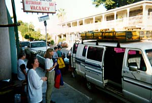
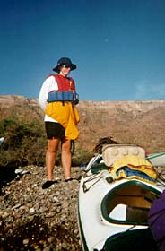
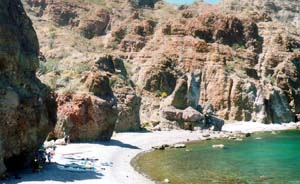
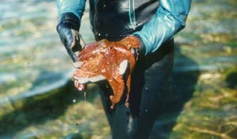
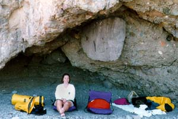

We were on the road right on time this morning -- bags strapped to the roof of the van, and everyone adorned with shiny new outdoor clothing form REI. Our guides were split up: Martin gave directions to the van driver in broken Spanish, the driver nodded and we were off. We saw Martin drive off in a different direction, but our driver pointed our van for the highway.

It was an amazing drive. We headed down the coast, past tiny villages and storefronts. We drive through Puerto Escondido, the beautiful hidden cove Stienbeck waxed poetic over in Log From the Sea of Cortez.
Finally, we pulled off in Luguí, a collection of small houses and a school. He stopped in the dead center of the village square and looked around, then paused for a moment before turning to us. "¿Donde está Martin?" We all shrugged, thinking, "Shouldn't you know that?" We sat there for a moment longer and then he took off, following a dirt track into the brush, through a river bed, and finally onto the beach. It was empty -- no sign of our kayaks or guides. We got out, looked around a bit, then piled back into the van, and drive off into the brush. For an hour, we combed the deserted country, searching for our contacts. Leslie spoke furiously with our driver in Spanish, trying desperately to figure out what he was thinking. Back to the highway, back to Puerto Escondido, out to the beach, back to Liguí...
Finally, an old man told us a different way to the beach, to a place where the locals go to launch their pongas. We tried it, and -- three hours late -- we pulled up at a beach lined with kayaks and two very stressed out guides. We told the story over a breakfast of pastries and coffee, loaded our gear into the boat, and headed out to sea.

I was starting to feel Baja infused through me. The country was much like where I grew up in the desert east of Los Angeles, although without the lacing of suburban sprawl. The land was harsh and raw and empty. There is no water. The elements are on you always. I was glad to be lost in the van and to see the backside of the area. Now I was glad to be underway.
Leslie and I are fairly new to kayaking and this is our first time in a double. With the two of us and 200 pounds of gear, the boat is amazingly stable, yet surprisingly quick. We crossed open water this morning, heading for Isla Danzante three miles from the peninsula.
Unlike our bay back home, this water has not green to it, only shade after shade of blue, blending in a hazy horizon with the sky.

We paddled around behind Danzante to a small cove and went ashore. We could see down to the bottom through 10 feet of water, with vibrant life clinging to the rocks.

We pulled our kayaks clear of the intertidal zone and unpacked to set up camp. There were two caves in the rock -- one became the kitchen, the other we claimed as our bedroom. As the others set up their tents, we rolled our bags out and settled down in our new home, looking out at the cove and the sea beyond.

Late that night, I awoke to the hollow sound of whales blowing offshore.